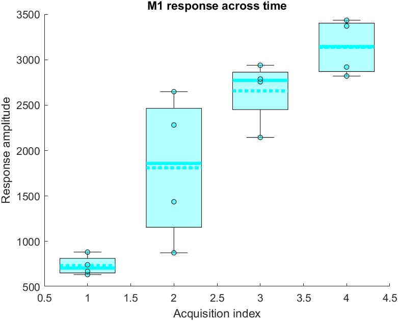

The umIToolbox offers the possibility to extract the data from several recordings and save to a .mat file to be used outside the toolbox.
This section describes how the data is structured and gives an example on how to work with the extracted data.
Important
We assume that the data was already preprocessed and saved in .mat files and selected in the umIToolbox Analysis tab. To learn how to select the data, click here.
The .mat file is generated using the Save2Mat tool in the Analysis tab from the umIToolbox app. The file contains the lists of groups (list_of_grous), events (list_of_events) and observations (list_of_observations) stored as cell arrays of characters. In addition the data and metadata of each recording are stored in a variable named stats_data.
The stats_data consists of a structure array in which each item corresponds to an acquisition (i.e. recording) selected in the object Tree from umIT's Analysis tab.
Each element of the structure array contains the following fields:
| Field | Description |
|---|---|
| groupID | The name of the experimental group |
| SubjectID | The name of the subject |
| AcquisitionID | The name of the acquisition/recording |
| ModalityID | The name of the recording modality |
| RecStartDateTime | Timestamp of the recording (start) with format YYYY-MM-DD HH:mm:ss |
| dataFile | Full path to the .matfile containing the recording's data |
| labels | Cell array containing labels for each data point. The labels are generated by one of the Analysis functions |
| observationID | Cell array with the names of each observation (e.g. ROIs) |
| data | Cell array with the data of each observation (in the same order as observationID) |
| dataSize | Cell array the size of each element of data |
| AcquisitionIndx | Index of acquisition. For instance, an AcquisitionIndx of 3 means that this is the third recording of a given Subject |
| b_isBaseline | Boolean indicating if this recording is considered as baseline |
| b_hasEvents | Boolean indicating if the data contains events |
| gIndx | Group index from the list_of_groups list. |
| sIndx | Subject index. For instance, an sIndx of 2 means that the SubjectID is the second subject in the list of subjects (list not saved) |
| rIndx | Array of observation indices. The list of indices associated with each observation listed in the observationID field. Each index points to the position of an element in the list_of_observations list |
| eIndx | Array of event indices. The list of indices associated with each event listed in the list_of_events list. If the data has no events, the index is equal to zero |
Here is an example on how to use the data extracted from umIT:
% In this example, the data consists of scalar values (single values)
% corresponding to the response amplitude of the primary motor cortex
% following a sensory stimulation.
% The data consists of a single group containing four subjects and
% four acquisition per subject.
%% Load the extracted data:
s = load('test_dataStruct.mat');
%% Get the data of each group
% Here, we will create column vectors of the acquisition indices and data
% values for the observation "M1_R"
% Preallocate variables
x = zeros(length(s.stats_data),1, 'single');
y = x;
% Populate x and y variables with the acquisition index and data values
% respectively:
for ind = 1:length(s.stats_data)
x(ind) = s.stats_data(ind).AcquisitionIndx;
% Find observation "M1_R";
iObs = strcmpi('M1_R', s.stats_data(ind).observationID);
% Get data from the selected observation:
y(ind) = s.stats_data(ind).data{iObs};
end
%% Plot data:
% Now, we will use the toolbox's plotting function "stripchart" to plot
% boxplots of the responses across acquisitions:
ax = stripchart(x,y,'Boxplot', true);
% Customize axis:
ax.Title.String = 'M1 response across time';
ax.XLabel.String = 'Acquisition index';
ax.YLabel.String = 'Response amplitude';
Here is the resulting plot:
